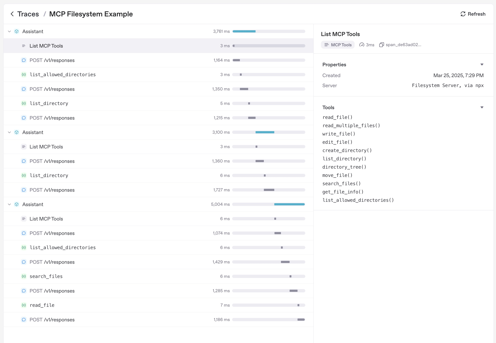

模型上下文协议（MCP）
模型上下文协议（简称MCP）是一种为大模型提供工具和上下文的方法。根据MCP文档所述：
MCP是一个开放协议，它标准化了应用程序如何向大模型提供上下文。可以将MCP视为AI应用的USB-C接口——正如USB-C为设备连接各种外设提供了标准化方案，MCP则为AI模型连接不同数据源和工具提供了标准化方式。
Agents SDK现已支持MCP协议。这意味着您可以使用各类MCP服务器来为智能体提供工具支持。
MCP服务器类型
当前MCP规范根据传输机制定义了两类服务器：
- stdio服务器作为应用程序的子进程运行，可视为"本地"运行模式
- HTTP over SSE服务器以远程方式运行，需通过URL进行连接
您可以使用[MCPServerStdio][agents.mcp.server.MCPServerStdio]和[MCPServerSse][agents.mcp.server.MCPServerSse]类来连接这些服务器。
例如，以下是使用官方MCP文件系统服务器的示例：
async with MCPServerStdio(
params={
"command": "npx",
"args": ["-y", "@modelcontextprotocol/server-filesystem", samples_dir],
}
) as server:
tools = await server.list_tools()
MCP服务器使用指南
MCP服务器可被添加到智能体中。每次运行智能体时，Agents SDK都会调用MCP服务器的list_tools()方法，使大模型感知该服务器提供的工具。当大模型调用MCP服务器的工具时，SDK会触发该服务器的call_tool()方法。
agent=Agent(
name="Assistant",
instructions="Use the tools to achieve the task",
mcp_servers=[mcp_server_1, mcp_server_2]
)
缓存机制
每次智能体运行时都会调用MCP服务器的list_tools()方法，这可能产生延迟（特别是远程服务器）。如需自动缓存工具列表，可向[MCPServerStdio][agents.mcp.server.MCPServerStdio]和[MCPServerSse][agents.mcp.server.MCPServerSse]传递cache_tools_list=True参数，但请仅在确定工具列表不会变更时使用此功能。
如需清除缓存，可调用服务器的invalidate_tools_cache()方法。
端到端示例
完整示例请参阅examples/mcp目录。
追踪功能
追踪系统会自动捕获以下MCP操作： 1. 调用MCP服务器列举工具的过程 2. 函数调用中与MCP相关的信息
